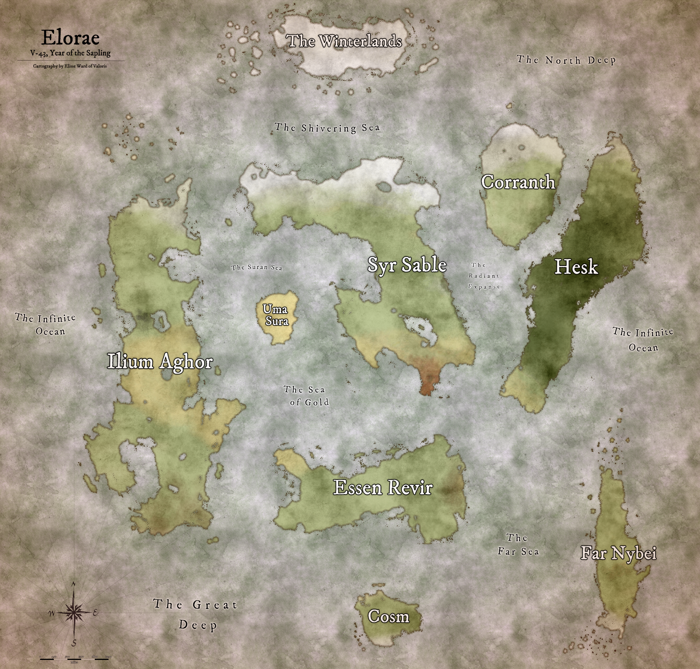

Where are we?
Elorae, "Elor Ae" meaning "The World Away" in the language of the Ancients. The world is an old one, a lone planet adrift in a cosmic void. Over the ages, the world has seen the ravages of magics and countless wars, the rise and fall of empires, and the growth and decay of magnificent landscapes. Landmarks from days past lie between great kingdoms, shining seas crash upon breezy coasts, and within caves and ruins creep things better left unknown.
What does the world look like?
On Elorae, in the Fifth Era, there are nine continental landmasses and a massive subterrane underneath. Please use the tabs above to learn a brief overview of each continent.
What are the Eras?
There are six major eras of time from the beginning of creation to the present day. 0 The Primordial Era, or prehistory, is era zero. Here they are listed:
The Primordial Era
0-~5000000 to 0-0
An era of prehistory and pre-civilization. Humanoids lived as gatherers and clansfolk, foraging and living in the wilds. The majority of era zero was ruled by the Arch Dragons, whose might and totality of reign would never be rivaled again. The Skylords - the great avians - defeated the Arch Dragons with the aid of Hesk, and imprisoned Salaseth, the Dragon God, within Nargarond, in an act known as The Sealing. In the wake of the dragons' defeat, humanity was able to progress. The era ended with the construction of humanity's first civilization, Ultravis, built by the aghorians.
The First Era
I-0 to I-3088
Generally known as the Age of Conquest. A long era that began with conquest and exploration, and carried the longest time span of uninterrupted peace. Though many wars were fought over territories and regions, many refer to the First Era as the "Golden Age". Out of Ultravis, the aghorians explored and conquered, and over the centuries became the first people who would spawn the majority of cultures and traditions across the world. In time, they would be completely divorced from the lands of their origin. Notably, the Vingian Empire would be recognized as the first empire in history, constructing their reach of power from their legendary city, Seltandor the Great. The prosperity of the First Era would end when the aghorian sorcerers of Ultravis would cast Infinity to prevent the arrival of Maegoroth, the Elder God. Though they succeeded, the world would shatter from the event, bringing about the Great Calamity of Ril'gorah, and the disappearance of Aghor.
The Second Era
II-0 to II-1500
Generally known as the Dark Age. An era of darkness and ruin, marred by a horrible curse. In the wake of Ril'gorah, the kingdoms and cities across the world would be brought to smoldering rubble - fire would rain from the sky and the lands were thrown into great upheaval. Ril'gorah, an aghorian phrase meaning "The Great Dying", would bring darkness and pain for a thousand years. In or around ~II-50, the kings of yore, those whose kingdoms were reduced to rubble and their people ravaged by famine, raised their vengeful banners against mysterious figures who arrived during the cataclysm. The Val'norain, aghorian for "Those From the Beyond", were ascendant beings who held great power and were blamed by the Kings' for the havoc and destruction. The Kings' War would rage for centuries until halted by a vicious defeat during the Battle of Agal's Rock, that would leave them disfigured and their nature forever altered - to be then forever known only as the Demon Kings. In its final years, a dark and cursed winter came upon the land, and the clouds overhead would never clear. Women were doomed with infertility and humanity was on the brink of extinction. An army of horror, roused by a corrupted alliance between a fallen Val'norain and a King, would rise to hasten the end. They were known as the Knights of the Dark, or more commonly "The Dark" and would begin their cleansing of all souls in II-1440. The Second Era would end with the Battle of Dawn, a climactic clash where Maegoroth would descend and be destroyed alongside the Dark and the ancients, and Aghor would return.
The Third Era
III-0 to III-1354
Generally known as the Dawn Age. An era of reconstruction following the suffering of the Dark Age. Aghor was elevated to heights of global worship as the one ancient God of all, who led the lands out of utter desolation. Villages, cities, and new empires were built atop the ashes of darkness, the new light of the shining suns giving hope to the wanting people. The Concord of the Second Era would amicably dissolve as its members faded into the legends of time, lauded with the highest reverence for their unimaginable achievements. The kingdoms in the centuries to follow would grow from the seeds they planted. New borders were drawn and great wars were waged by new people for resources in the new world. The cycles of war would not end, though there would be pockets of peace therein. That was, until a great empire arose in the twelfth century, led by the young and ambitious king, Elraim. His growing empire would spawn from the northern lands of Ilium Aghor after the Old Golossian lords were drawn to stalemate in the Long Battle of Nilheen, III-1213. The commander, Malicator, High Lord of the Golossian Alliance, was a fearsome and storied lord of war. He would submit to Elraim and pledge his armies to the Empire. From there, it conquered south, crushing all who would not bend the knee, with the prize of Aghoras as its ultimate goal. And so, that goal was soon achieved. In III-1231, Aghoras would submit to the Empire of Raim when the Grand Sorcerer Rathalon would officially join Aghoras with the empire. With the mythic sorcerers of Aghoras and the full might of the Alliance of Golos, Elraim's reign was unmatched, and by III-1249, the entirety of Ilium Aghor would belong to the Empire. A hundred years of difficult unification passed and for a hundred years Elraim remained High Emperor - until the close of the Third Era, where all would be changed forever. Elraim, Malicator, and Rathalon, the Triune Lords of Ilium Aghor, sought to liberate the populace of the oppression they believed still remained - that of God himself. So with their great power, the three carved their way to the Infinite Throne, within the realm of Aghor, and slayed him. However, the details of the final years of the era and the terrible event are drowned in the murk of time. Thus, the soul of God was split in three, and the Triune Lords would forever be known as the Godform.
The Fourth Era
IV-0 to IV-2320
Generally known as the Age of Divinity. An age of new gods, great power, and wars unlike the world had yet seen. The Empire of Raim would bring their dominance across the sea, establishing states of rule within Syr Sable, and Essen Revir. Following the act of the Godform, drowned in limitless mana, as the Infinite was roused to become unbound. It was discovered that the potential of the soul had been fundamentally altered. Divine ascension of souls became possible, and over the centuries, new gods arose to form new pantheons in the absence of Aghor. Because of this, the lands of the Raim Empire would crumble in time, as the newly ascended Gods and their fervent followers would rise. God-Emperor Elraim, in his fury, would battle the rebel gods, ending wars and the dreams of thousands, though it would not be enough. The world longed for change, and the Gods heeded their call, for good or for evil. Raim would languish for centuries, before being officially declared a toppled empire with the rise of the Eren Dominion in IV-1621. Thus, Elraim, Malicator, and Rathalon would fade to time. Over the next 700 years, magnificent and terrible conflicts occurred, such as The Helfaust Supremacy, Horlg's Cleansing and Demethine's Crusade, The Burning, The Savagery, The Six-Kings' War, and the Wars of Kaiden. In the twilight years of the Fourth however, out of the dust and ruin of his crumbled and forgotten empire, Elraim emerged once again. He appeared before the inner chamber of Aghoras' Great Forum, where a realms-wide delegation of powerful lords was in attendance. There, he knew what was to come - Ril'gorah, which ended the first age. A portal would tear open time and space as the Aghorian Sorcerers from the first era channeled Infinity to thwart Maegoroth. The portal would consume the delegation, and continue to grow if not closed. Elraim would alone cast Infinity and sacrifice himself to close the portal and prevent greater catastrophe. And so, Ril'gorah was contained to the first age and the meeting lords were forcibly, and unintentionally, sent from the Fourth to the First to become the Val'norain of the Dark Age. And so the cycle would repeat, a paradox without beginning or end.
The Fifth Era
V-0 to Present [V-44]
Following Elraim's death, the loss of so many great lords and political dignitaries created a chaotic political landscape. To the world's dismay, the mythic Kingdom of Sorcery was obliterated. From across Ilium Aghor, to the lands of Syr Sable and beyond, nations held memorials to their fallen leaders and ceremonies for new coronations. In Ilium Aghor, the Falan Empire remains a superpower, pushing through the desert to join borders with their sister capital of Myrna. In Syr Sable, the royal queendom of Yollonde bolsters against the Red Scourge. The houses within Elen Asva quarrel over lordship. And of Far Nybei, a tyrant seems to lead Kaiden into a grim future. In a new age of promise, it is unknown what is to come.